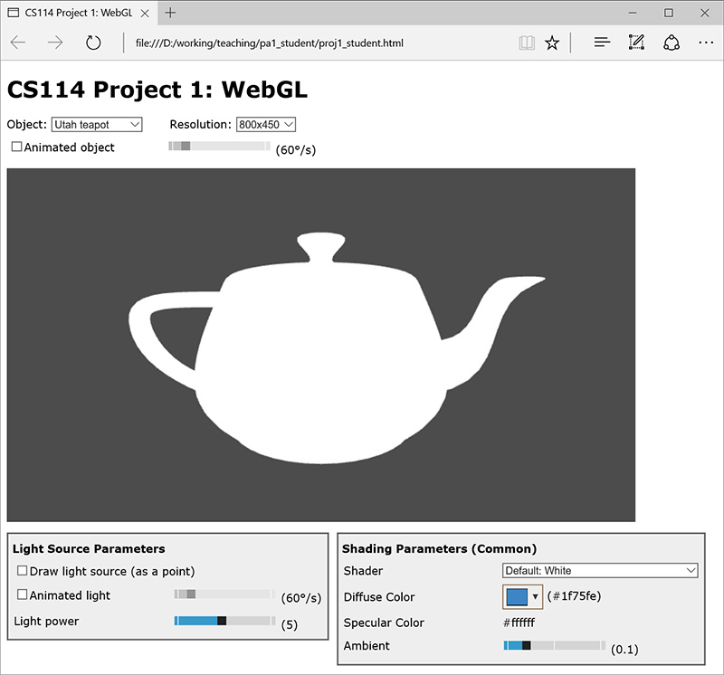
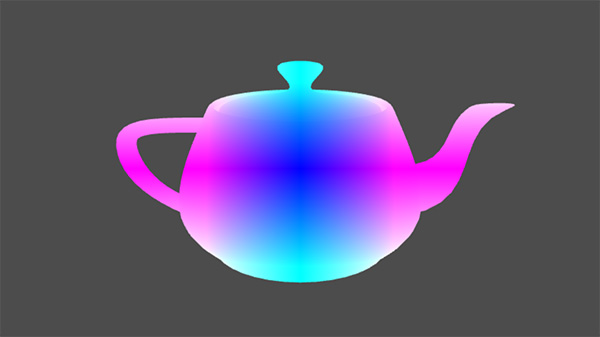
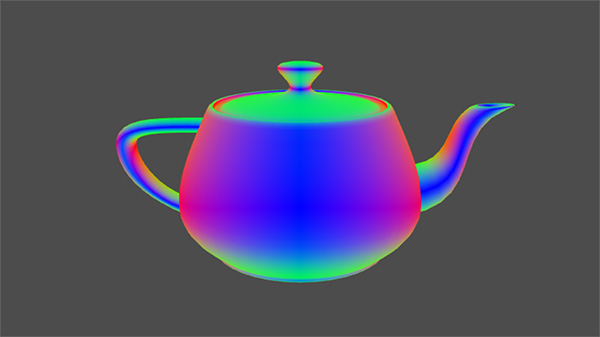
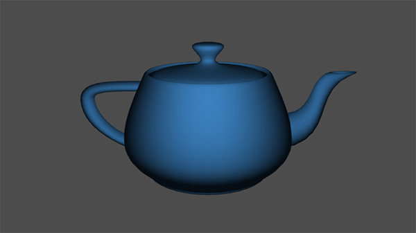
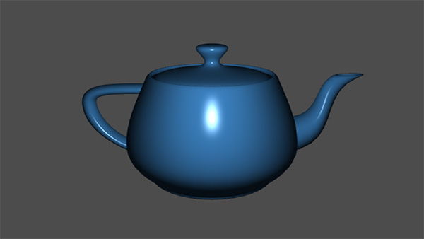
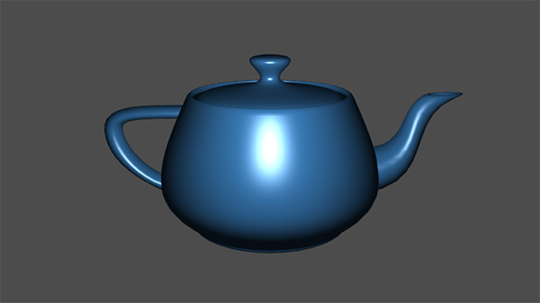
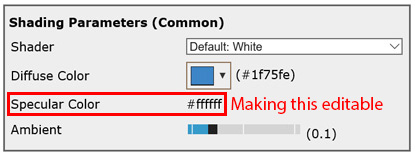

CS114 Project 1: WebGL
Due: Tuesday Apr 12, 2016 (23:59pm Pacific Time)
Work individually or in groups of two.
Overview
Download the project codebase here. Please use Piazza for questions, discussions, and pairing up.
The main focus of this project is using WebGL's fragment shader to implement a number of shading models:
- Diffuse Shading
- Phong and Blinn-Phong Shading
- (Isotropic) Microfacet Shading
To finish all non-optional tasks, the only file you will need to modify is proj1_student.html which contains all the shader code. We recommend using text editors such as vim, emacs, Sublime, or Notepad++ for coding and Google Chrome to run your code (although recent versions of Mozilla Firefox and Microsoft IE/Edge should also work). Remember to keep the console open for seeing Javascript/GL error messages.
The vertex shader has been provided for you:
<!-- Common vertex shader for all shading models --> <script id="shader-vs" type="x-shader/x-vertex"> uniform mat4 uMVMatrix; // Model-view matrix uniform mat4 uPMatrix; // Projection matrix uniform mat4 uNMatrix; // Normal matrix attribute vec3 aVertexPosition; // Vertex position in object space attribute vec3 aVertexNormal; // Vertex normal in object space varying vec3 vPosition; // Vertex position (camera space) varying vec3 vNormal; // vertex normal (camera space) void main(void) { vec4 camSpacePosition = uMVMatrix * vec4(aVertexPosition, 1.0); vPosition = vec3(camSpacePosition); gl_Position = uPMatrix * camSpacePosition; vec4 camSpaceNormal = uNMatrix * vec4(aVertexNormal, 0.0); vNormal = vec3(camSpaceNormal); } </script>
Besides clip-space position of each vertex, the vertex shader also computes camera-space position (vPosition) and normal (vNormal) which will be useful for implementing shading models.
The only fragment shader provided to you simply returns white (i.e., vec4(1.0, 1.0, 1.0, 1.0)) for all fragments:
<script id="shader-fs0" type="x-shader/x-fragment"> precision mediump float; varying vec3 vPosition; // Vertex position (camera space) varying vec3 vNormal; // Vertex normal (camera space) void main(void) { // Dummy variable to ensure the use of all vertex attributes. vec4 zero = vec4(vPosition + vNormal - vPosition - vNormal, 0.0); gl_FragColor = zero + vec4(1.0, 1.0, 1.0, 1.0); } </script>
Do not worry about the dummy variable zero. It is used to ensure that all vertex attributes are acutally used: certain WebGL compilers automatically remove inactive attributes, causing GL Errors when assigning attribute data. You can simply leave zero as is and add it to the fragment color for shaders.
As a result, you will see boring renderings like this:

During this project, you will write fragment shaders generating much more interesting images!
Useful reference: OpenGL ES Shading Language built-in functions
Task 1: Normal, Viewing, and Lighting Directions
To warm up, you first task is to write three very simple shaders that visualize fragment position as well as normal and lighting directions (all in camera space). In proj1_student.html, please use the fragment shader with id shader-fs1-1, namely the <script> element starting with
<script id="shader-fs1-1" type="x-shader/x-fragment">
for position, shader-fs1-2 for normal, and shader-fs1-3 for lighting visualizations.
For your convenience, all needed uniform/varying variables have been pre-declared. You only need to complete the void main() function of each shader. This is also the case for Tasks 2 and 3.
1-1. Position
Let $\mathrm{p}$ be the camera-space position of a fragment (which is stored in a varying variable named vPosition), simply set the fragment color (i.e., gl_FragColor) to $$\mathrm{fragColor} = | \mathrm{p} |,$$ where $| \cdot |$ denotes the absolute-value (i.e., abs()) operation.
Notice that gl_FragColor has the type of vec4 (i.e., 4D vector) while vPosition is vec3. Thus, you will need to use vec4(vPosition, 1.0) to cast vPosition into a 4D vector.
With a correct implementation, you should see the following:

1-2. Normal Direction
Let $\mathrm{n}$ be a fragment's camera-space normal direction (stored in varying-variable vNormal), set the fragment color to $$\mathrm{fragColor} = \left| \hat{\mathrm{n}} \right|,$$ where $\hat{\mathrm{n}} := \mathrm{n}/ \|\mathrm{n}\|$ with $\| \cdot \|$ denoting the length of a vector. In other words, you need to set the fragment color to (the absolute value of) the normalized version of $\mathrm{n}$ (hint: using the normalize() function for simpler code).
With a correct implementation, you should see the following:

1-3. Lighting Direction
In this project, the scene only contains one point light source. Let $\mathrm{p}_{\mathrm{light}}$ be its camera-space position (stored in uniform-variable uLightPos). For a fragment with position $\mathrm{p}$, the lighting direction (i.e., the direction from which light comes) is $\mathrm{i} := \mathrm{p}_{\mathrm{light}} - \mathrm{p}$. You need to set the fragment color to $$\mathrm{fragColor} = \left| \hat{\mathrm{i}} \right|,$$ where $\hat{\mathrm{i}} := \mathrm{i}/\|\mathrm{i}\|$. With a correct implementation, you should see the following:

Task 2: Diffuse (Lambertian) Shading Model
The first actual model you need to implement is the Diffuse Shading Model. Please modify the fragment shader with id shader-fs2.
Besides input (uniform/varying) variables used in Task 1, this shader takes three extra uniform variables as input:
- Diffuse color $k_d$: a 3D (RGB) vector stored in uDiffuseColor;
- Light source "power" $I_0$: a scalar stored in uLightPower;
- Ambient intensity $c_0$: a scalar stored in uAmbient.
Under this shading model while following the notations in Task 1, the fragment color is given by $$ \mathrm{fragColor} = k_d \left(I \cdot \max(\langle \hat{\mathrm{n}}, \hat{\mathrm{i}} \rangle, 0) + c_0\right), $$ where $\langle \cdot , \cdot \rangle$ denotes the dot product of two vectors, and $I$ is the "intensity" of incoming light and equals $$ I := \frac{I_0}{\| \mathrm{i} \|^2/5 + 5}, $$ where $\mathrm{i}$ is the (unnormalized) lighting direction defined in Task 1-3.
With a correct implementation, you should see the following (with default lighting/shading parameters):

Task 3: Phong and Blinn-Phong Shading Models
Now it is time to add some highlights! For this task, you will implement the Phong and the Blinn-Phong, two of the earliest shading models designed for this purpose.
3-1. Phong Shading
For each fragment, the viewing $\hat{\mathrm{o}}$ and reflected $\hat{\mathrm{r}}$ directions (in camera space) are given by $$ \hat{\mathrm{o}} = - \frac{\mathrm{p}}{\| \mathrm{p} \|}, \quad \hat{\mathrm{r}} = 2 \hat{\mathrm{n}} \langle \hat{\mathrm{n}}, \hat{\mathrm{i}} \rangle - \hat{\mathrm{i}}.$$ The fragment color under the Phong shading is $$ \mathrm{fragColor} = \begin{cases} k_d \left( I \cdot \langle \hat{\mathrm{n}}, \hat{\mathrm{i}} \rangle + c_0 \right) + I \cdot \max(\langle \hat{\mathrm{o}}, \hat{\mathrm{r}} \rangle, 0)^{\alpha}, && \langle \hat{\mathrm{n}}, \hat{\mathrm{i}} \rangle > 0,\\ k_d\ c_0, && \mathrm{otherwise}, \end{cases} $$ where $\alpha$ is accessible via a uniform variable named uExponent.
Please edit the fragment shader with id shader-fs3-1 to implement this shading model. You should see the following with default parameter values:

3-2. Blinn-Phong Shading
For each fragment, the half vector $\hat{\mathrm{h}}$ (between $\hat{\mathrm{i}}$ and $\hat{\mathrm{o}}$) is $$ \hat{\mathrm{h}} := \frac{\hat{\mathrm{i}} + \hat{\mathrm{o}}}{\left\| \hat{\mathrm{i}} + \hat{\mathrm{o}} \right\|}. $$ The fragment color under the Blinn-Phong shading is then given by $$ \mathrm{fragColor} = \begin{cases} k_d \left( I \cdot \langle \hat{\mathrm{n}}, \hat{\mathrm{i}} \rangle + c_0 \right) + I \cdot \langle \hat{\mathrm{n}}, \hat{\mathrm{h}} \rangle^{\alpha}, && \langle \hat{\mathrm{n}}, \hat{\mathrm{i}} \rangle > 0,\\ k_d\ c_0, && \mathrm{otherwise}, \end{cases} $$ where $\alpha$ is accessible via a uniform variable named uExponent.
Please edit the fragment shader with id shader-fs3-2 to implement this shading model. You should see the following with default parameter values:

Task 4: (Isotropic) Microfacet Shading Model
Finally, let us look at a more advanced model is more physically meaningful (and accurate) than the Phong and the Blinn-Phong models. Microfacet shading models treat the surface of an object as a collection of micro-mirrors characterized by the statistical distribution of their normal directions. You can refer to this paper for more details, but for this task, the model boils down to computing $$ \mathrm{fragColor} = \begin{cases} I \cdot \langle \hat{\mathrm{n}}, \hat{\mathrm{i}} \rangle \left( k_d + \displaystyle\frac{F(\hat{\mathrm{i}}, \hat{\mathrm{h}})\ D(\hat{\mathrm{h}})\ G(\hat{\mathrm{i}}, \hat{\mathrm{o}}, \hat{\mathrm{h}})}{4 \langle \hat{\mathrm{n}}, \hat{\mathrm{i}} \rangle \langle \hat{\mathrm{n}}, \hat{\mathrm{o}} \rangle}\right) + k_d\ c_0, && \langle \hat{\mathrm{n}}, \hat{\mathrm{i}} \rangle > 0,\\ k_d\ c_0, && \mathrm{otherwise}, \end{cases} $$ where
- $F(\hat{\mathrm{i}}, \hat{\mathrm{h}})$ is the Fresnel factor and equals $$ F(\hat{\mathrm{i}}, \hat{\mathrm{h}}) = \frac{1}{2} \frac{(g - c)^2}{(g + c)^2} \left( 1 + \left(\frac{c(g + c) - 1}{c(g - c) + 1}\right)^2 \right), $$ with $$ g := \sqrt{\eta^2 - 1 + c^2}, $$ in which $\eta$ is the material's refractive index and can be accessed through uniform variable uIOR and $c := \langle \hat{\mathrm{i}}, \hat{\mathrm{h}} \rangle$.
- $D(\hat{\mathrm{h}})$ is the GGX normal distribution function: $$ D(\hat{\mathrm{h}}) := \frac{\beta^2}{\pi \cos^4 \theta_h (\beta^2 + \tan^2 \theta_h)^2}, $$ where $\theta_h$ is the angle between $\hat{\mathrm{n}}$ and $\hat{\mathrm{h}}$, and $\beta$ is the surface roughness stored in uniform variable uBeta.
- $G(\hat{\mathrm{i}}, \hat{\mathrm{o}}, \hat{\mathrm{h}})$ is the shadowing-masking function (of the GGX distribution): $$ G(\hat{\mathrm{i}}, \hat{\mathrm{o}}, \hat{\mathrm{h}}) := G_1(\hat{\mathrm{i}}, \hat{\mathrm{h}})\ G_1(\hat{\mathrm{o}}, \hat{\mathrm{h}}), $$ and $$ G_1(\mathrm{v}, \hat{\mathrm{h}}) := \frac{2}{1 + \sqrt{1 + \beta^2 \tan^2 \theta_v}}, $$ where $\theta_v$ is the angle between $\hat{\mathrm{n}}$ and $\mathrm{v}$ (for any unit vector $\mathrm{v}$).
Please edit the fragment shader with id shader-fs4 to implement this model. You should see the following with default parameter values:
Hint: let $\mathrm{u}_1$ and $\mathrm{u}_2$ be two unit vectors and $\theta$ be the angle between them, then it holds that $$ \cos\theta = \langle \mathrm{u}_1, \mathrm{u}_2 \rangle, \qquad \tan^2\theta = \frac{\sin^2 \theta}{\cos^2 \theta} = \frac{1}{\cos^2\theta} - 1 = \frac{1}{\langle \mathrm{u}_1, \mathrm{u}_2 \rangle^2} - 1. $$
Extra Credit: Customizing Specular Color
Warning: This optional task requires significantly more coding than the previous ones. Please ensure the correctness of your implementation for all previous tasks before trying this one!
If you are interested in digging deeper into the provided codebase and doing some general HTML/Javascript programming, consider making the specular color $k_s$, which is currently fixed to one (i.e., white), customizable:

In this case, the shading models for Tasks 3 and 4 become $$ \begin{align} \mathrm{fragColor}_{\mathrm{Phong}} &= \begin{cases} k_d \left( I \cdot \langle \hat{\mathrm{n}}, \hat{\mathrm{i}} \rangle + c_0 \right) + k_s\ I \cdot \max(\langle \hat{\mathrm{o}}, \hat{\mathrm{r}} \rangle, 0)^{\alpha}, && \langle \hat{\mathrm{n}}, \hat{\mathrm{i}} \rangle > 0,\\ k_d\ c_0, && \mathrm{otherwise}; \end{cases}\\[10pt] \mathrm{fragColor}_{\mathrm{Blinn-Phong}} &= \begin{cases} k_d \left( I \cdot \langle \hat{\mathrm{n}}, \hat{\mathrm{i}} \rangle + c_0 \right) + k_s\ I \cdot \langle \hat{\mathrm{n}}, \hat{\mathrm{h}} \rangle^{\alpha}, && \langle \hat{\mathrm{n}}, \hat{\mathrm{i}} \rangle > 0,\\ k_d\ c_0, && \mathrm{otherwise}; \end{cases}\\[10pt] \mathrm{fragColor}_{\mathrm{microfacet}} &= \begin{cases} I \cdot \langle \hat{\mathrm{n}}, \hat{\mathrm{i}} \rangle \left( k_d + k_s \displaystyle\frac{F(\hat{\mathrm{i}}, \hat{\mathrm{h}})\ D(\hat{\mathrm{h}})\ G(\hat{\mathrm{i}}, \hat{\mathrm{o}}, \hat{\mathrm{h}})}{4 \langle \hat{\mathrm{n}}, \hat{\mathrm{i}} \rangle \langle \hat{\mathrm{n}}, \hat{\mathrm{o}} \rangle}\right) + k_d\ c_0, && \langle \hat{\mathrm{n}}, \hat{\mathrm{i}} \rangle > 0,\\ k_d\ c_0, && \mathrm{otherwise}. \end{cases} \end{align} $$
You will need to add one uniform (RGB) variable to each corresponding fragment shader to handle $k_s$. In addition, you should add an additional color picker. This can be achieved by:
- Adding one <input type="text" ...> element to proj1_student.html (similar to the one with id="colorPicker").
- Editing proj1.js following $("#colorPicker").spectrum(...) to turn the previously added <input> element into an actual color picker (thanks to spectrum.js).
- Editing proj1_webgl.js to declare and initialize the new uniform variable and its local copy (check how shaderProg.kdUniform and diffuseColor works).